Module Code: COMP11120 | Module Name: Server Side Web Development
Chinook Album Manager User Documentation
Project Report and User Guide
Student Name: Aby Daniel Varghese
Student ID: B01820561
Module Coordinator: Graeme McRobbie
Project Title: Chinook Album Manager
1. Introduction
1.1 Purpose of the System
The Chinook Album Manager is a web application created using PHP and MySQL.
Its purpose is to help Chinook employees manage album records through a browser-based interface
instead of editing database tables manually.
The system allows the user to view album records, search for specific albums or artists, open full album details,
create new album records, update existing information, and delete albums when needed.
It also works with related data in the artists and tracks tables.
1.2 Intended Users
Chinook employees who need to manage album records
Staff members who need to search, add, update, or delete information
Users who need clear instructions for the main tasks in the system
1.3 Main Features
Homepage dashboard with album, artist, and track totals
Search by album title or artist name
Details page showing one album and its related artist and tracks
Create page for inserting a new album with artist and track information
Update page for editing album, artist, and track details
Delete page with confirmation before removal
Success messages after create, update, and delete actions
1.4 System Requirements
Windows computer
XAMPP installed
Apache and MySQL running
phpMyAdmin
A browser such as Microsoft Edge or Google Chrome
1.5 Homepage Overview
The homepage is the main starting point of the system.
It contains the title section, summary cards, search area, and the main album table with action buttons.
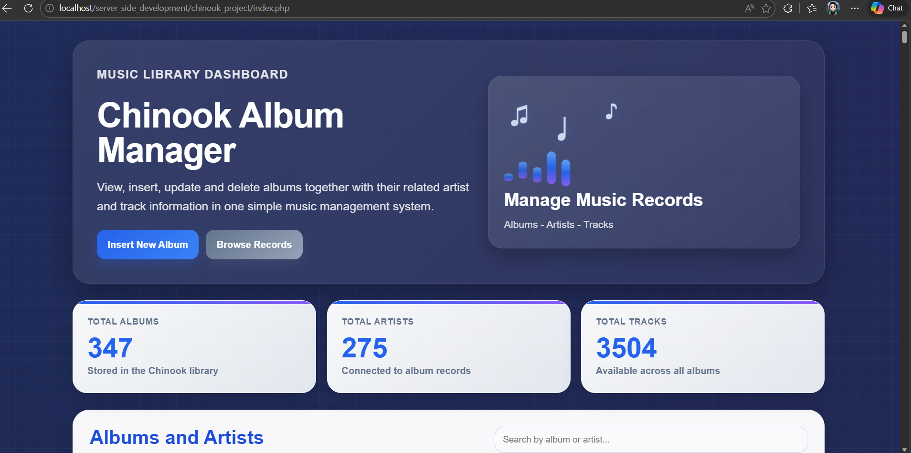
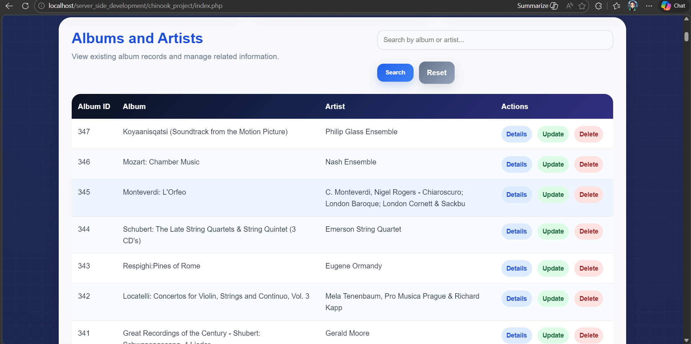
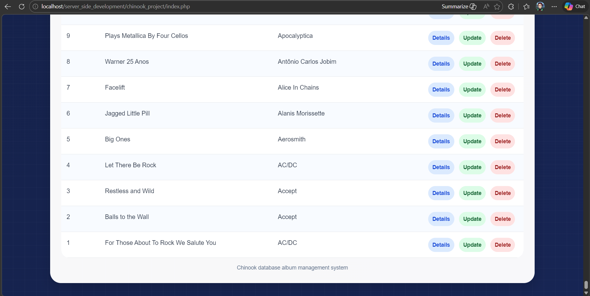
Figure 1. Homepage of the Chinook Album Manager showing the dashboard and album list
2. Getting Started
2.1 Starting the Local Server
Open the XAMPP Control Panel.
Start Apache.
Start MySQL.
Check that both services are running.
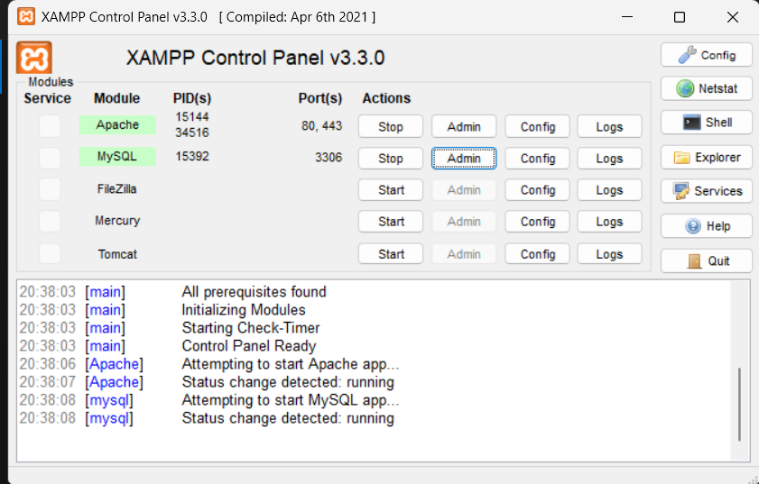
Figure 2. XAMPP Control Panel with Apache and MySQL running
2.2 Preparing the Database and Project Folder
Before opening the system, the Chinook database must be imported into phpMyAdmin and the project folder must be stored inside the
local htdocs directory.
In this setup, the database file is chinook.sql and the project folder is chinook_project.
An example browser address is:
http://localhost/server_side_development/chinook_project/
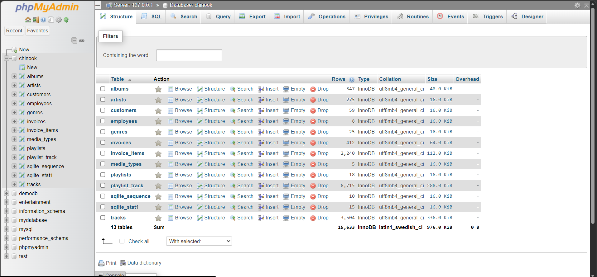
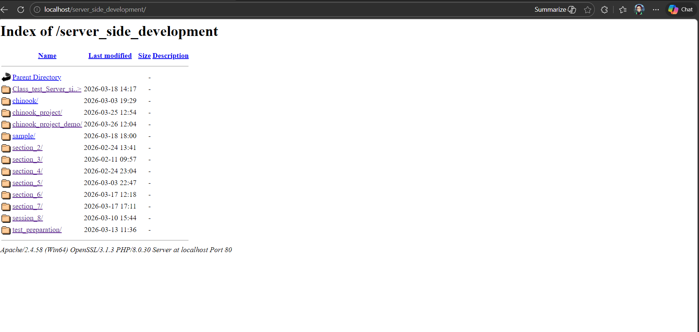
Figure 3. Chinook database in phpMyAdmin and the project folder stored on the local server
2.3 Database Connection
The connection details used in db.php are:
Host: localhost
Username: root
Password: blank
Database: chinook
Once Apache, MySQL, the project folder, and the Chinook database are ready, the system can be opened in the browser.
3. Features and Functionality
3.1 Search and Browse
The homepage allows the user to browse album records and search by album title or artist name.
This makes it easier to find specific records without scrolling through the whole table.
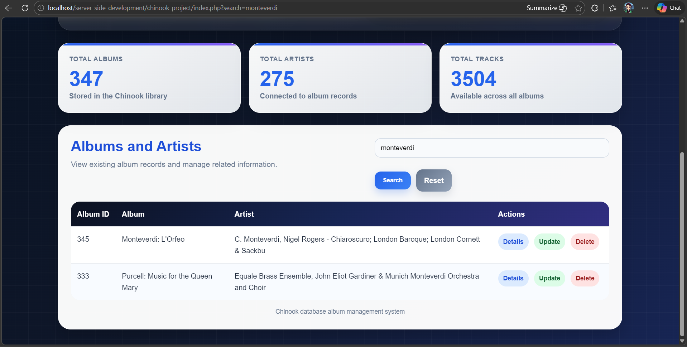
Figure 4. Search results shown on the homepage
3.2 Viewing Album Details
When the user clicks Details, the system opens a page showing the selected album,
the linked artist, and the tracks stored for that album.
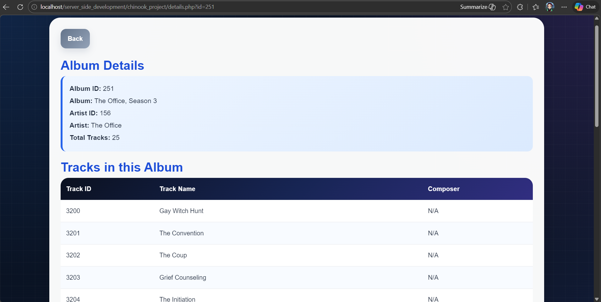
Figure 5. Details page showing album information and related tracks
3.3 Creating a New Album
The create page allows the user to enter an album title, choose or type an artist name,
and add one or more tracks. After submission, the system returns to the homepage,
displays a success message, and shows the new album in the table.
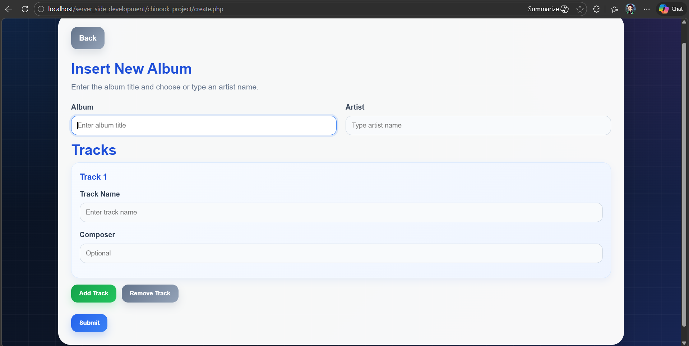
Figure 6. Blank create form
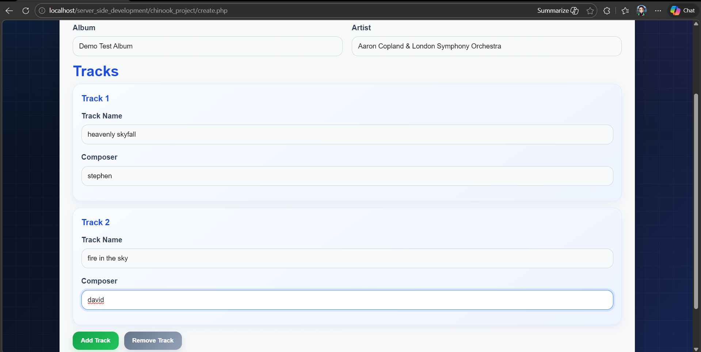
Figure 7. Create form completed with album and track information
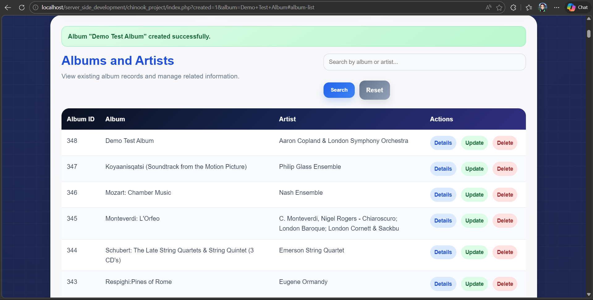
Figure 8. Homepage after creating a new album
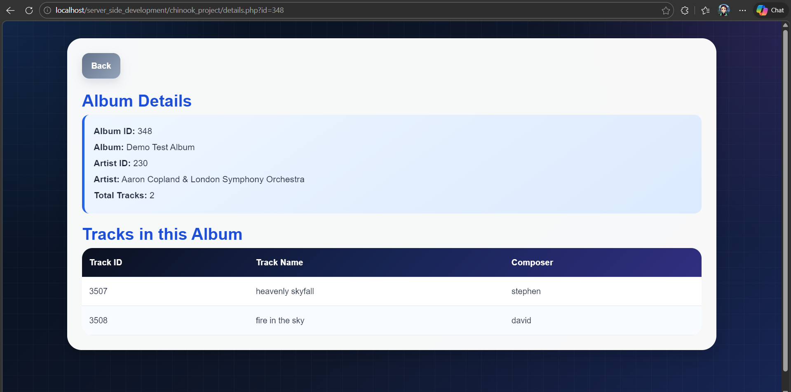
Figure 9. Details page for the newly created album
3.4 Updating Album and Track Information
The update page allows the user to change the album title, change the artist name,
edit current tracks, add new tracks, and remove existing tracks if needed.
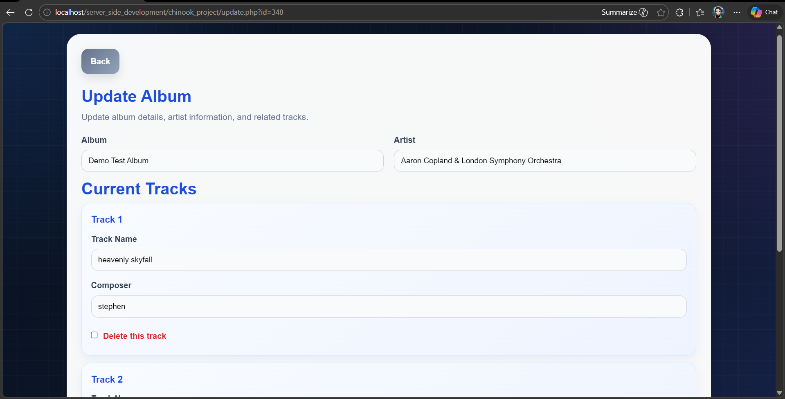
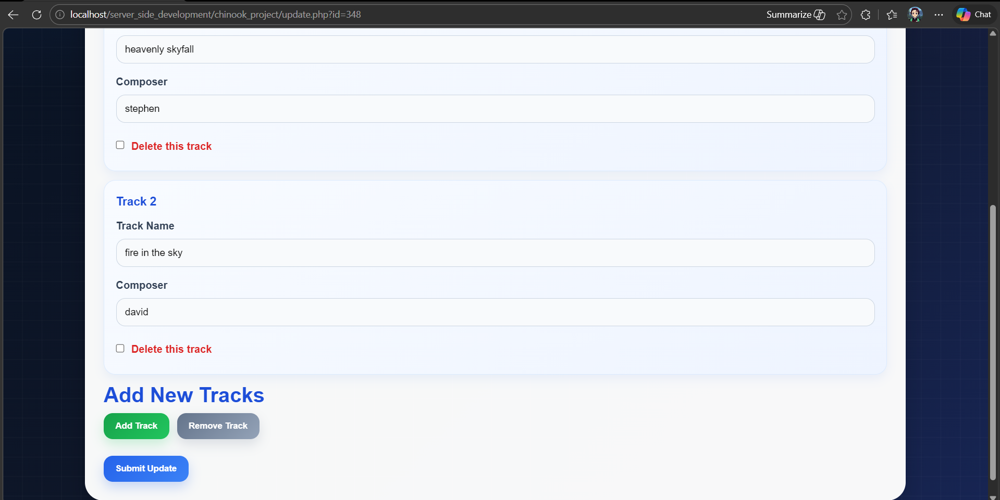
Figure 10. Update page before changes are submitted
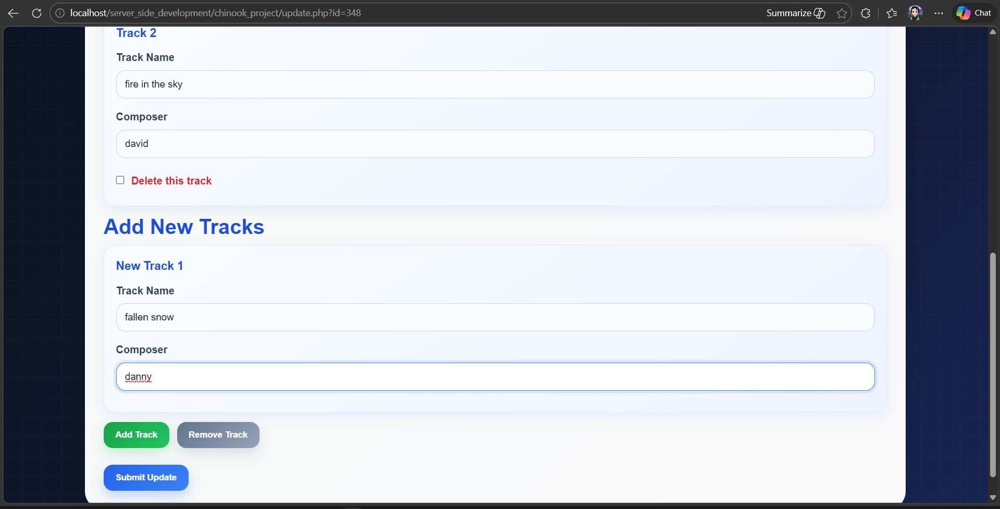
Figure 11. Update page after adding a new track
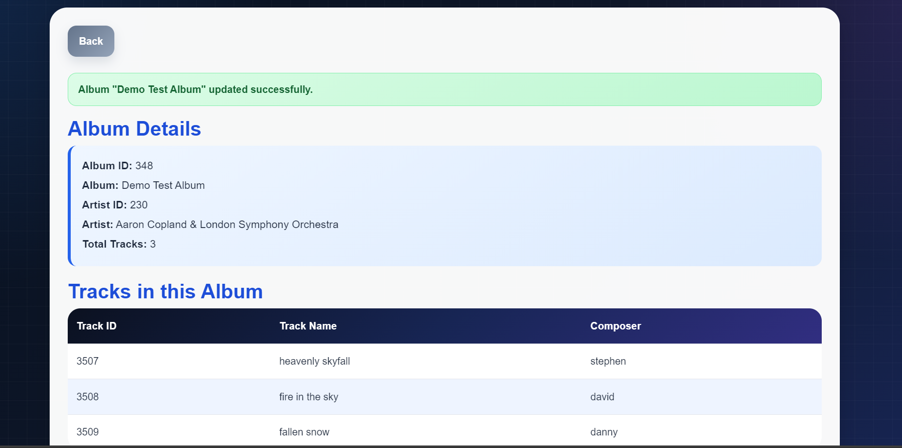
Figure 12. Details page after saving an update
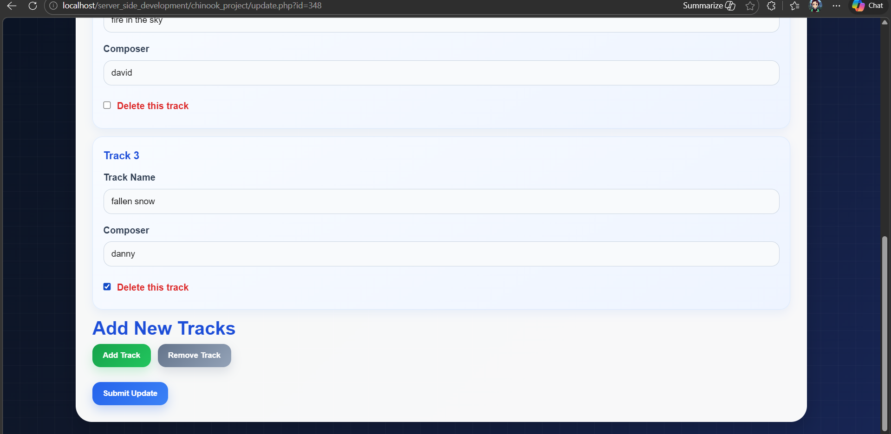
Figure 13. Update page with one track selected for deletion
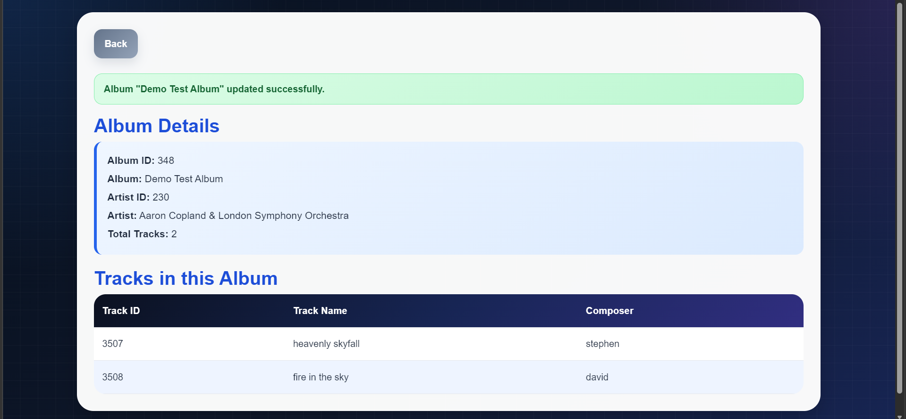
Figure 14. Details page after removing a track through the update page
3.5 Deleting an Album
The delete page asks the user to confirm the action before the record is removed.
It also shows related album and track information so the user can check the record carefully before deleting it.
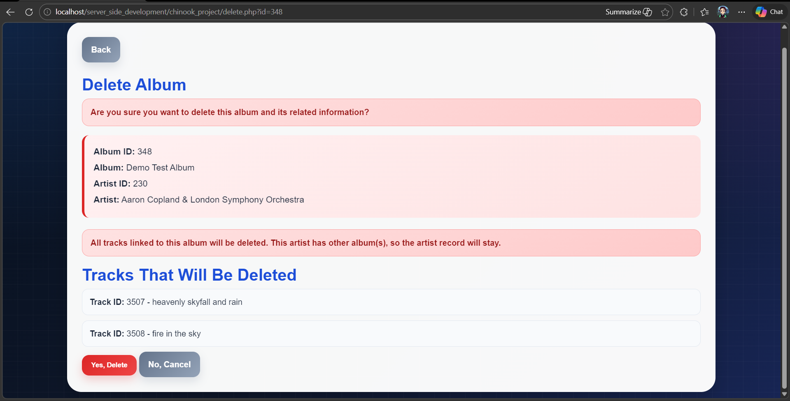
Figure 15. Delete confirmation page
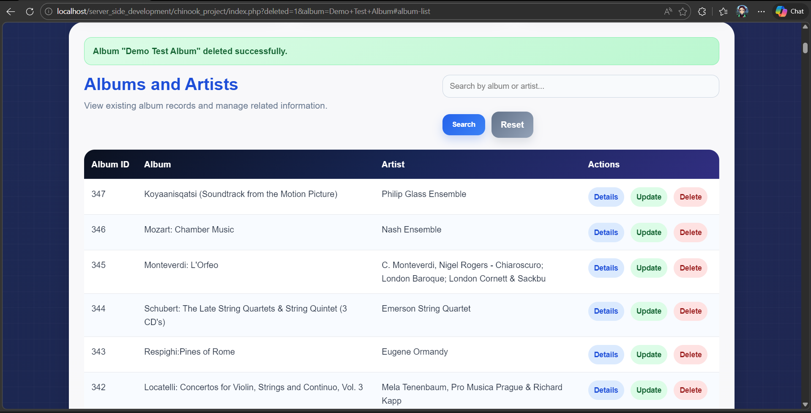
Figure 16. Homepage after the album was deleted successfully
4. Step-by-Step Instructions
4.1 Viewing All Records
Open the homepage in the browser.
Scroll to the album table.
Review the album list and the action buttons.
Use Details, Update, or Delete depending on the task.
Expected result: the user can browse all available album records. Reference: see Figure 1.
4.2 Searching for a Record
Open the homepage.
Type an album title or artist name into the search box.
Click Search.
Review the filtered results.
Click Reset to return to the full list.
Expected result: matching records are displayed. Reference: see Figure 4.
4.3 Viewing Album Details
Open the homepage.
Find the album you want to inspect.
Click Details.
Read the album information and linked tracks.
Expected result: the details page shows the selected album and its related tracks. Reference: see Figure 5.
4.4 Adding a New Album
Open the homepage.
Click Insert New Album.
Enter the album title.
Enter or choose the artist name.
Enter at least one track.
Use Add Track if more track fields are needed.
Click Submit.
Expected result: the album is added, a success message appears, and the new record is shown in the album list. Reference: see Figures 6, 7, 8 and 9.
4.5 Updating an Album
Open the homepage.
Click Update for the chosen album.
Change the album title, artist, or track information as needed.
Add a new track if required.
Tick Delete this track if an existing track should be removed.
Click Submit Update.
Check the details page to confirm the change.
Expected result: the updated information is saved correctly and shown on the details page. Reference: see Figures 10, 11, 12, 13 and 14.
4.6 Deleting an Album
Open the homepage.
Click Delete for the chosen album.
Review the album and track information carefully.
Click Yes, Delete.
Return to the homepage and confirm that the record has been removed.
Expected result: the album is removed from the list and a success message is shown. Reference: see Figures 15 and 16.
5. Troubleshooting
5.1 The Application Does Not Open
Possible causes:
Apache is not running
The project folder is not inside htdocs
The browser address is incorrect
Solution: restart Apache in XAMPP, confirm the folder path is correct, and open the correct localhost address for the project.
5.2 The Database Connection Fails
Possible causes:
MySQL is not running
The Chinook database has not been imported
The settings in db.php are incorrect
Solution: start MySQL in XAMPP, import chinook.sql, and check the database connection values in db.php.
5.3 A Form Will Not Submit
Possible causes:
The album title is missing
The artist name is missing
No track has been entered
The same album already exists for the same artist
Solution: complete the required fields, add at least one track, and change the album or artist name if a duplicate record already exists.
6. Conclusion
This system allows the user to view, search, create, update, and delete album records while also working with related artist and track data.
The screenshots in this guide show the main workflow of the application from setup through to the main CRUD tasks,
helping the user understand how each page works and what result to expect after each action.